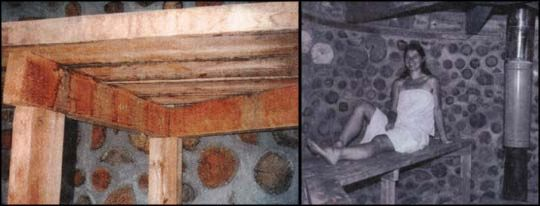

The Cordwood Sauna
December/January 1999
by Rob Roy
While the idea of an electric sauna, particularly a redwood electric sauna, makes me cringe today for environmental reasons, I didn't know any better at age 16. And I accepted the American line of thought that sauna was only properly experienced in a bone-dry atmosphere. The idea was that high temperatures could only be endured at low humidity, a myth still unfortunately accepted by many Americans and touted at too many hotels. Sauna, I was taught early on, was meant to be a dry experience, save for the moisture produced by one's own sweat glands.
My first clue that I was on the wrong track came three years later at a hotel in Iceland, where the sauna was kept at an unbelievable 220°F (water boils at 212°F) and the Icelanders would occasionally throw water on the hot basalt rocks that covered the stone, thus creating lowly (pronounced "low-lu"), the "sacred steam" so important to true sauna. I knew that sauna had Scandinavian or Norse origins, so I figured the Icelandic experience was a lot closer to sauna's roots than what I'd known in Massachusetts. In Iceland I learned that sauna - the authentic Finnish version of sauna - is not simply a sweat in a dry room. Sauna is an experience of contrasts, of wet and dry, great heat and cold. After a few minutes at 220°F, some of the bathers would lower themselves into a pool of 45°F water, the ultimate temperature and moisture contrast. While sauna has evolved over the past millennium (the introduction of the chimney in the 19th century was a particularly useful innovation), the basic characteristics that we look for in a good sauna building have remained the same.
A good sauna building is "seasoned" with several hours of high heat prior to use. While there are electric- and sometimes gas-fired sauna stoves, even in Finland, old-timers will tell you that the only authentic sauna is wood-fired. The Finns value the background aroma of wood and smoke, though no actual smoke remains in the stove room. There is practical sense to the wood-fired sauna, as well. In Finland, most country saunas are some distance from the home, with no easy access to electric wires or gas lines.
Centuries ago, the original saunas were earth-sheltered or of log construction, with both styles having plenty of thermal mass to absorb and store heat. Over the past 20 years, my wife, Jaki, and I have found an alternative to horizontal log construction: cordwood masonry. My article in the May 1995, Mother Earth News ("Rob Roy's Earthwood Home") tells how we built our round two-story cordwood masonry earth-sheltered home, which also serves as the main campus building at our Earthwood Building School.
The "5-E" advantages that make cordwood masonry perfect for house building also make it ideal for sauna building: 1) ease of construction, 2) economy, 3) esthetics, 4) ecological harmony and 5) energy efficiency.
For sauna, the last of these 5-E advantages is particularly compelling. Cordwood masonry has the perfect energy characteristics for a sauna - excellent insulation combined with exceptional thermal mass. This combination means that heat loss through the sauna walls is minimized, while the short "log ends," as well as the inner mortar joint, act as thermal mass if placed on the correct ( inner) side of the insulation. Once the sauna is seasoned, the fire can go out and the fabric of the building will keep internal temperatures up to the required 150°F to 180°F. I have learned over the years and through various extremes that this is the normal and preferred range of temperatures favored by sauna experts. Adjustments are made for the size of the sauna stove room, as well as the age of the bathers, because large saunas can be hotter than small ones. Children and the elderly generally sauna at a lower temperature than other folks. At our round Earthwood sauna, described herein, we season the stove room for about three hours in the winter and two hours in the summer.
The round shape of the cordwood sauna has two advantages, one practical and one more intuitive. The practical advantage is that the round shape encloses the most space per unit of perimeter. What this fact of geometry means is that when you add the vertical dimension, creating a cylinder, you enclose the maximum volume per square foot of side walls (vertical side walls, at least).
The intuitive advantage is the feeling of warmth and comfort that comes from being inside of a small, round building, Many of our sauna guests describe experiencing an almost womb-like or nestlike sense of security.
Okay, my journey into the history and lore is done, at least for this article. The Earthwood sauna is the best I've experienced, and this is as it should be. The sauna that you build, dear reader, will be the best you've ever experienced too. Now I need to tell you how it's done.
The Foundation
Cordwood masonry, like any wooden wall system, needs to be kept clear of the ground. I like a good solid masonry foundation that extends at least 4 inches shove grade. Although stone could be used for the foundation - if you've got the stones and the time-our Earthwood sauna foundation is concrete, formed with 8"wide strips of 1" Dow Styrofoam(restricted) wellposted with 2 x 4 stakes around the perimeter to prevent concrete "blow-out." For the 8"thick cordwood walls recommended for this 10'-diameter building, a footing cross section of 12" wide and 8" deep is adequate. To avoid having to dig footings down blow frost level (4 inches in our area!), scrape the organic material to the edge of the site, and bring in a dump-truck load of good coarse sand. This is used to build a "pad" upon which your circular footings will float. I call this a floating ring beam. If the sand pad drains water from the sauna to a point downgrade, there will be no water to collect under the footings or slab. No water means no freezing; no freezing means no frost heaving ... or the accompanying structural damage. Don't take my word for it: This was also Frank Lloyd Wright's favorite foundation system. It is cheap and easy. And in rural areas the floating slab is becoming the accepted foundation strategy of choice for garages, outbuildings, even homes. Do not pour the floor at this time, just the footings.
Cordwood Construction
Over the years, MOTHER has published several articles about cordwood masonry, but, for new readers, my standard definition will help: Cordwood masonry is a building technique by which walls are built of short logs (called log ends) laid up transversely in the wall, much as a rank of firewood is stacked. The walls derive exceptional thermal characteristics from the log ends (which have value as both insulation and mass) and the special mortar matrix, which features an insulated space between two separate mortar joints, one on the interior and one on the exterior of the wall.
A list of the best woods to use for a cordwood sauna would include white cedar, white or red pine, spruce, poplar or cottonwood (quaking aspen) and other light and airy woods. These woods should be debarked, cut to length and dried for a year outdoors in single covered ranks prior to use. Species to avoid would be aromatic red heart cedar (unbearable odor at high temperatures), very pitchy woods such as balsam fir, and dense hardwoods such as oak, beech, maple, elm and cherry. These woods will shrink substantially, even if you dry them for a long time, and if you get the log ends too dry, there is a danger of structural damage from swelling.
A good mortar mix for cordwood saunas is 9 parts sand, 3 parts soaked sawdust, 2 parts Type I Portland cement and 1 part lime. The sand should be clean, washed sand of fine gain, such as mason ry sand. The sawdust should be softwood sawdust from a sawmill, which has been passed through a half-inch screen and soaked in an open-topped vessel at least overnight. The sawdust retards the set of the mortar, greatly reducing mortar shrink age cracks between log ends. The lime to use is Type S or hydrated or builder's lime (it goes by many names). Do not use agricultural lime.
Always wear rubber gloves when mixing and working with mortar. The cement and lime can cause nasty "cement holes" in your skin, which take forever to heal. With an ordinary garden hoe, dry mix the ingredients in a wheelbarrow until the batch reaches a consistent color. Then add water and mix it in with the hoe. Keep adding water until the mortar passes the "snowball test." When you throw a "snowball" of mortar three feet in the air, you should be able to catch it without it going "sploot!" in your gloved hands. Nor should it crumble apart. Only with mortar of the right consistency can you juggle two or three snowballs of the stuff.
Building a cordwood wall is easy. Just follow the mantra: mud, wood, sawdust. First, with your rubber gloves - a trowel just slows you down - place the double mortar matrix down on the foundation. An 8"-thick wall is good for a sauna, so the mortar (mud) joints should each be about 2 1/2"-wide and about 1" thick. Next, the 2 1/2" cavity between the inner and outer mortar joints is filled with insulation; the best I've found is a sawdust/lime mixture, at a ratio of about 11:1. The insulation is poured into the cavity with a small spouted bucket or a tin can. Do not omit this step! A "dead air space" simply does not do the trick; the sauna will not perform well, if at all. Finally, set a log end into place, spanning from the inner to the outer mortar joints. Place the log end into the mud with a slight vibrating motion, creating what I call a "suction bond."
You might have noted that I've called for a 2 1/2" mud joint, a 2 1/2" sawdust insulation layer, and another 21/2" mud joint, or 7 1/2" in all. But the log ends are 8" long. The other 1/2" is divided equally between a recessed inner and outer mortar joint, further refined during the pointing process.
Pointing - sometimes called tuck pointing or grouting - is a very important step and should not be left out. With a stainless-steel knife, which has had the last inch of its blade bent up at a slight angle (say, 10°), press firmly on the mortar to smooth the mud. This accomplishes four things: l) It makes the wall look good. 2 ) It smooths the wall, creating a water-repelling instead of a water-absorbing surface. 3) It maximizes the friction bond between mud and wood, making the wall stronger. 4 ) The 1/4" recessed pointing provides a space in which repairs can be made, in case the wood or the mortar shrink. Log Jam(restricted) or Perma Chink(restricted)) flexible log chinking products are both suitable caulkings for the purpose, but are best applied if a 1/4" deep recessed mortar joint guides the smoothening brush between the log ends.
That's basically it: mud, sawdust, log ends, pointing. Follow this order and the wall practically builds itself. Logs can either be split or left in the round, and any size from 2" to 10" in diameter. Try to se lect log ends so that a constant 1"-thick mortar joint is left all around for ease of pointing.
Don't let logs touch each other. For a more thorough discussion of cordwood masonry, see my Complete Book ofCordwood Masonry Housebuilding (Sterling, 1992), The Sauna (Chelsea Green, 1996) or my video, Basic Cordwood Masonry Techniques. All are available from MOTHER'S Bookshelf.
Doors, Windows, Rafters
The sauna door frame is installed first, before cordwood work commences, so that the masonry can be laid up against the frame. Use heavy framing stock, such as 4 x 8 rough-rut lumber from a local sawmill. Make window frames ahead of time to fit your windows, which can be fixed (non-opening) thermal pane units. I have had good success over the years finding these windows in the back rooms of insulated glass manufacturers. Often I can buy small thermal panes for $10 or less. For a small, round sauna, the width of the window should not exceed 18 inches. The height is more flexible. Our two little windows are 18"-square and quite adequate. We also put a 12" x 24" pane in the door, so daytime light is good. A single 12-volt, 15-watt incandes cent electric light provides plenty of light for nighttime in the small 8', 8" internal diameter) stove room. ( Earthwood is off the grid.)
Although good sauna doors are available commercially, I always make my own for economy. I sandwich 2" of extruded polystyrene insulation between layers of rough-cut one-by planking. The planking and Styrofoam(restricted) is framed with 2 x 6s ( see illustration ). For the Earthwood sauna, I used 2 x 4s for the framing material and went with a 12"-wide window. The door window is optional, particularly if you have another source of natural light.
One of the most important (and too often neglected) components of a sauna is ventilation. If the wood heater is in the stove room with you, it will require air to burn - valuable air, your air. Therefore, you'll want to include a direct vent to the exterior to supply combustion air for the firebox. This can simply be a 6"-diameter stovepipe mortared into the wall like a log end. Place it down at floor level and as close as possible to the air intake for the stove. Other ventilation options should also be included. One trick is to leave an inch of clearance at the bottom of the door. Another is to install a couple of 8" diameter ceramic "thimbles" in the wall, in place of log ends. These thimbles can be purchased at masonry supply yards, where they are sold for use in chimney construction. A log end of about the same diameter as the thimble can be inserted or removed, to allow for air as needed. A little wooden handle eases removal.
Install two such vents on opposite sides of the stove room, one a foot higher than the other. The difference in air temperature in a sauna is about 1 F per inch of height, so the 12° differential helps promote air movement. Air temperature drops a little when the vents are open, but is soon restored when they are closed, thanks to the heat stored in the cordwood walls. It's like being inside a brick oven. Incidentally, temperature stratification in the stove room is why it is good to place the sauna benches at various heights, so that people can choose the temperature they prefer. For example, by occupying the lower bench, children can share a sauna with their parents.
But back to structure. At the Earthwood sauna, we finished the top of the cordwood wall with 16 wooden plates, each 22" long, made from 2 x 8 stock. Eight of these plates act as supports for the radial rafter system, composed of 4 x 8 pine timbers. Every second plate, the ones supporting the rafters, is set 1/2" tower than the previous one, establishing a positive pitch for drainage, west to east.
One of the timbers, he east-west one, goes all the way through the building. Six shorter rafters meet at the center and are fastened to the primary raftter by way of 1/4" steel plates, above and below the intersection, and eight pieces of 1/2" threaded rod tying the metal plates and rafters together in a central hub. The photo and illustration above show how the "snow-blocking" spaces, the gaps between rafters, are filled with 6" thick milled cedar logs and mortar. Regular cordwood masonry would serve just as well at this location.
Our ceiling roof is made of 2 x 6 spruce tongue-and-groove silo staves, but any 2 x 6 planking (or even 3/4" plywood) would do. The only caveat is to avoid very pitchy material, as the pitch will bleed out of the wood at the 200°F or higher temperatures sometimes reached at ceiling level.
The Earth Roof
Although an earth roof is not absolutely necessary, it is aesthetically pleasing, long-lasting and is a sauna tradition in Finland. Our roof layers, above the planking, are as follows: 1) The waterproofing membrane. We use the Bituthene(restricted) 4000 waterproofing membrane made by W.R. Grace. Installation is easy: Just pull the backing paper off the 36"-wide rolls and press it onto the wooden deck. Detailed instructions appear on the packaging. 2) An inch of Dow Styrofoam(restricted) or equivalent extruded polystyrene insulation. 3) A layer of 6-millimeter black polyethylene, the base of the all-important drainage layer. 4) Two inches of #2 crushed stone, the drainage layer. 5) A layer of loose hay or straw, which keeps the drainage layer clear of soils from above. 6) Eight inches of earth planted to grass or sods cut from a field. A roof constructed in this way should last 100 years or forever, whichever comes first.
Stove and Stovepipe
Our stove is homemade from 1/4" plate steel, but its construction would require an article by itself. You can adapt existing plate steel stoves to a sauna. The key is to find a creative and safe way to fasten bricks or nonporous stones to the various sides. The top and three sides of our stove are covered with 320 pounds of dense bricks, which store a tremendous amount of heat. We pour water on these hot bricks to create steam. Even more authentic than bricks, but not so easy to hang, are softball-size stones. Dense limestone, trap rock or basalt all make good sauna stones. Avoid soft sandstones or any fractured rock, which will absorb water and break with the steam, perhaps violently.
A good, reasonably priced line of sauna stoves is made by Bruce Manufacturing (Route 1, Box 25, Bruce Crossing, MN 49912). They make electric-, gas-, and wood-fired models. One of their wood-fired models can be fired from outside the stove room, which keeps the room clean and prevents oxygen from being robbed from the internal air. My book, The Sauna, lists at least a dozen other manufacturers and gives a detailed account of how we made our stove.
For stovepipe, use "Type A" chimney, such as triple wall metal stovepipe or, my favorite, Metalbestos(restricted) stovepipe, which is stainless steel inside and out, with an inch of non-asbestos insulation between. These Type A systems are expensive but safe, and they're easy to install. Homemade chimneys are often unsafe, and some of them are downright scary.
Floor Plan
The round sauna described herein is perfect for four people. The benches are 2 x 6 smooth poplar planks, supported from below by vertical upright 2 x 4s and 2 x 4 ledgers. Bench support pieces can be lag-screwed right into the log ends themselves.
I've tried to give an honest and accurate account of our round sauna, which is the best sauna I've ever been in. Yours will be different, perhaps slightly larger or smaller; maybe it will not have an earth roof, maybe it will. No matter. Your sauna, also, will be the best. This is how it is and how it should be. No manufactured sauna can match the love that you build into your own. And cost? The building materials will run you about $400 to $700, depending on your procurement skills. To this figure, add the stove and stovepipe, which could cost another $500 to $1,000, depending on whether your stove is new or used and what kind of deal you can get on your stovepipe. Hint: some dealers will sell slightly dented but perfectly safe Metalbestos(restricted) at quite a discount.
With a cordwood masonry sauna, one word of caution is necessary. Wait a week or two after laying the last log end before firing up the sauna to full temperature. Premature firing may cause damage to the mortar. Remember that soaked sawdust was introduced into the mix to retard the mortar set. Give it time to cure.
While the Finnish tradition of sauna, briefly outlined above, is a great place to start, you'll soon refine your own patterns of use according to your own needs, whims, climate and the building itself. Happy sweating!
Complete details concerning cordwoodmasonry can be found in the instructional video Basic Cordwood Masonry Techniques and in Rob's books, Complete Book of Cordwood Masonry House building and The Sauna. Earth roofs arediscussed in The Complete Book of Underground Houses: How to Build a Low-Cost Home (Sterling, X974). Allare available from MOTHER'S Bookshelf (1-800888 9098).
Rob Roy is the director of Earthwood Building School, 366 Murtagh Hill Road, West Chazy,NY 1292. (528) 493-7744.
|
The earth roof, which looks the peculiar but perfect addition to our summer garden, effectively keeps the cold out of our sauna indefinitely. |
If you can make cement and handle logs, you have all the skills necessary for cordwood construction. Creativity completes the tool kit. |
 The Earthwood sauna has a 9' inside diameter, which translates to a 10', 4"" outside diameter. (1) High platform, 42"" off floor. (2) Low platform, 36"" off floor. (3) Ceramic thimble (8"" inside diameter) air vent. A cylindrical log end closes the vent. Vents are 5' and 6' off floor, respectively. (4) 4"" diameter combustion air inlet, near floor. (5) Stove surrounded by bricks (or stoned}. (6) Floor drain. (7) Forming boards. (8) Shelf. (9) Water-resistant (bathroom) light. (10) Spike for thermometer or towel. (11 ) 2'-wide door. (12) 16""-square window. (13) Wash bucket. (14) Whisk. (15) Firewood store. |
|
The perfect sauna wall is one that combines excellent insulation with exceptional thermal mass. Cordwood construction achieves both.mass. Cordwood construction achieves both. |
Our custom-designed and insulated door. |
320 pounds of brick surround the stove and store the heat. |
|
Make the windows useful but no too large |
The spokes of the roof wheel are 2 x 8 spruce tongue-and-groove silo staves, topped by standard roof planking, waterproofing material (I am laying Bituthene R4000 here), more insulating material, crushed stone, a loose layer of hay or straw and, finally, sod. |
|
|
|
|
|
|
|
|
 |